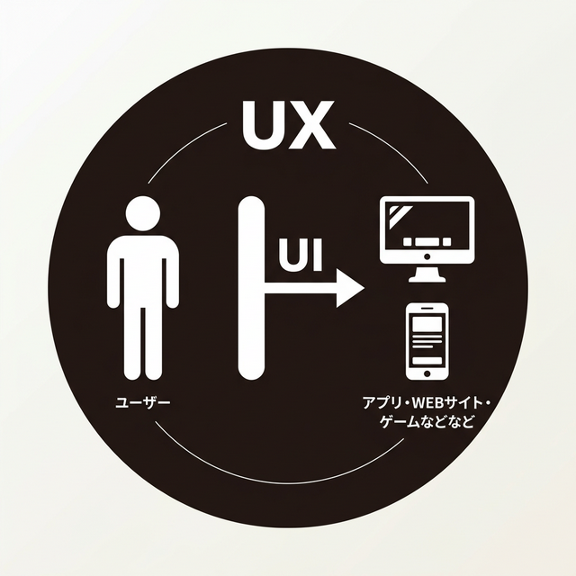

コンバージョンの考え方から、カルーセル・タブ・アコーディオンなど
現場で使われるUIコンポーネントをインタラクティブに体験しながら学べます。
↑ これがCTA（Call To Action）ボタンです。このページ自体がUIの実例になっています！
UIとは、ユーザーとプロダクト（Webサイトやアプリ）との「接点」のこと。
ボタン、フォーム、ナビゲーション、色、タイポグラフィなど、ユーザーが目にし操作するすべての要素がUIに含まれます。
色彩、タイポグラフィ、アイコン、画像など、視覚的な要素を通じてユーザーに情報を伝えます。一貫したビジュアルルールがブランドの信頼感を生み出します。
ボタンのホバー効果、アニメーション、トランジションなど、ユーザーの操作に対するフィードバックを設計します。適切なインタラクションは「使いやすさ」につながります。
情報の階層構造やナビゲーション設計を通じて、ユーザーが迷わず目的の情報に到達できるようにします。「どこに何があるか」を直感的に理解できるUIが理想です。
UIが「見た目や操作方法」を指すのに対し、UXは「ユーザーが得る体験全体」を意味します。
優れたUIはUXの一部であり、両者を正しく理解することがプロダクト設計の基本です。

→ 「どう感じるか・どう体験するか」
→ 「どう見えるか・どう操作するか」
UIはUXの一部として存在しています
見た目が美しい（=良いUI）だけでは、良い体験（=良いUX）とは限りません。 たとえば、デザインは洗練されていても、購入までに10ステップ必要なECサイトはUXが悪いと言えます。 UIとUXは常にセットで考え、「ユーザーの目的を最短で達成できるか？」を意識しましょう。
Webサイトの目的を達成するために知っておくべき「コンバージョン」の基礎概念を学びましょう。
Webサイトにおける「成果」のこと。商品の購入、会員登録、お問い合わせ送信など、サイトの目的に応じて定義されます。
そのWebサイト・ページが「何を目的にしているのか？」「達成したいことは何か」はとても大切です。その目的を達成するためにデザインで促すことが、UIデザインだと言えます。
ユーザーに行動を促すボタンやリンク。「今すぐ購入」「無料で試す」など、具体的で分かりやすい文言が効果的です。
サイト訪問者のうち、コンバージョンに至った割合。CVR = CV数 ÷ 訪問者数 × 100。一般的なECサイトでは1〜3%が目安です。
ユーザーがコンバージョンに至るまでの流れをファネル（じょうご）モデルで可視化します。
具体的な行動・メリットを明示。グラデーション背景で視認性が高く、ホバー時に浮き上がるフィードバック付き。
何が起きるか不明。目立たないデザインで、ホバーフィードバックもなく、ユーザーは行動をためらいます。
コンバージョンデザインの参考はこちら
小さな画面から設計を始め、大画面に拡張していくアプローチ。トグルを切り替えて、レイアウトがどう変化するか体験してみましょう。
モバイルでは要素を縦に積み上げ、1カラムで表示。スクロールの流れに沿った自然なレイアウトになり、読みやすさが向上します。
320px幅に3カラムを無理に表示すると、テキストが読めず、タップ領域も狭くなり、ユーザー体験が著しく低下します。
Apple HIG / Material Design ともに、ボタンやリンクのタップ領域は最低 44×44px を推奨。指で確実にタップできるサイズを確保しましょう。
Apple HIG / Material Designについてはこちら
詳しく読む →小さなボタンは誤タップを誘発し、ユーザーにストレスを与えます。特にリンクが密集するフッターやメニューで問題になります。
本文は最低 16px。
小さすぎるフォントは読みにくく、ユーザーがピンチズーム（拡大操作）を強いられます。見出しと本文のコントラスト（ジャンプ率）を意識し、情報の優先度を視覚的に示しましょう。
モバイルではハンバーガーメニューやボトムナビなど、片手操作を想定したナビゲーション設計が重要です。
📱 親指ゾーン（Thumb Zone）
スマートフォンを片手で持ったとき、親指が自然に届く範囲を「親指ゾーン」と呼びます。画面下部が最も操作しやすく、上部や端は届きにくい領域です。
主要なナビゲーションやアクションボタンは画面下部（親指が届く範囲）に配置することで、ユーザーが片手でも快適に操作できるUIになります。多くのアプリがボトムナビゲーションを採用しているのはこのためです。
ボトムナビゲーションの参考はこちら
雲仙温泉サイトを見る →モバイルブラウザで表示する場合、画面上部のアドレスバー（検索エリア）や画面下部の戻る・進むボタンなどのブラウザUIが表示領域を占有します。実際にコンテンツが表示される領域はデバイスの画面サイズよりも狭くなるため、レイアウト設計時にはこの分のスペースも考慮しましょう。
矢印やドットをクリックしてスライドを切り替えてみましょう。実際に動くカルーセルで仕組みを体験できます。
カルーセルデザインの参考はこちら
各タブをクリックして切り替えてみましょう。タブUIはカテゴリ分けされた情報を限られたスペースで表示するのに最適です。
CSS Gridを使って行と列を定義し、コンテンツを整然と並べるレイアウト。 ポートフォリオサイトやギャラリーで多く使われ、均等な間隔と一貫性のある見た目が特徴です。
CSS Grid display: grid gallery画像・タイトル・説明文を1つの「カード」としてまとめるパターン。 ECサイトの商品一覧やニュースサイトの記事一覧で定番のレイアウトです。ホバーエフェクトを加えるとインタラクティブに。
Flexbox hover effects e-commerceカードデザインの参考はこちら
Apple Store を見る →ヘッダー + サイドバー + メインコンテンツで構成される管理画面やブログに多いレイアウト。 ナビゲーションを常に表示しつつ、コンテンツ領域を広く確保できます。
sidebar dashboard blogサイドバーレイアウトの参考はこちら
集英社 部活サイトを見る → うなぎの寝床を見る →タブUIデザインの参考はこちら
Webサイトで頻繁に使われるインタラクティブなUIコンポーネントを実際に操作して学びましょう。
クリックで開閉できるFAQ形式のUI。必要な情報だけを表示して画面を整理できます。
クリックでコンテンツを展開・折りたたみできるUIパターン。FAQやサイドメニューに多用されます。
よくある質問（FAQ）、設定画面のカテゴリ分け、長い説明テキストの折りたたみなどに効果的です。
ボタンをクリックして、モーダルウィンドウやトースト通知を体験してみましょう。
モーダルウィンドウは重要な確認やフォーム入力に使用。背景が暗くなりユーザーの注目を集めます。オーバーレイクリックでも閉じられます。
トースト通知は一時的なフィードバック。「保存しました」「送信完了」など、操作結果を画面を遷移せずに伝えます。右下に表示され自動で消えます。
実際のWebサイトを見て、優れたUI/UXデザインの参考にしましょう。